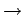
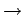

Inhalt Index DeskTop Bronstein

 Dynamische Systeme und Chaos Bifurkationstheorie, Wege zum Chaos Übergänge zum Chaos Auflösung eines Torus
Dynamische Systeme und Chaos Bifurkationstheorie, Wege zum Chaos Übergänge zum Chaos Auflösung eines Torus


Die Frage des Übergangs von einem regulären laminaren Verhalten zu einem irregulären turbulenten Verhalten ist besonders für Systeme mit verteilten Parametern, die z.B. durch partielle Differentialgleichungen beschrieben werden, von Interesse. Aus dieser Sicht läßt sich Chaos als zeitlich irreguläres, aber räumlich geordnetes Verhalten interpretieren. Turbulenz dagegen ist ein Systemverhalten, das sowohl zeitlich als auch räumlich irregulär ist. Das HOPF-LANDAU-Modell erklärt die Entstehung der Turbulenz über eine unendliche Kaskade von HOPF-Bifurkationen: Bei  entsteht aus einer Ruhelage ein Grenzzyklus, der bei instabil wird und zu einem Torus T2 führt. Bei der k-ten Bifurkation entsteht ein k-dimensionaler Torus, der durch nicht geschlossene Orbits aufgewickelt wird. Das HOPF-LANDAU-Modell führt i. allg. nicht zu einem Attraktor, der durch sensitive Abhängigkeit von den Anfangsbedingungen und Durchmischung gekennzeichnet ist.
entsteht aus einer Ruhelage ein Grenzzyklus, der bei instabil wird und zu einem Torus T2 führt. Bei der k-ten Bifurkation entsteht ein k-dimensionaler Torus, der durch nicht geschlossene Orbits aufgewickelt wird. Das HOPF-LANDAU-Modell führt i. allg. nicht zu einem Attraktor, der durch sensitive Abhängigkeit von den Anfangsbedingungen und Durchmischung gekennzeichnet ist.
Im System (17.17) sei und  . Bei Änderung des Parameters
. Bei Änderung des Parameters  sei die Bifurkationssequenz Ruhelage  Periodischer Orbit Torus Torus T3 über drei aufeinander folgende HOPF-Bifurkationen realisiert.
sei die Bifurkationssequenz Ruhelage  Periodischer Orbit Torus Torus T3 über drei aufeinander folgende HOPF-Bifurkationen realisiert.
Der auf T3 gegebene quasiperiodische Fluß sei strukturell instabil. Dann können schon bestimmte kleine Störungen von (17.17) zum Zerfall von T3 und zur Bildung eines seltsamen Attraktors führen, der strukturell stabil ist.
Gegeben sei das hinreichend glatte System (17.17) bei und . Beim Parameterwert habe System (17.17) einen anziehenden glatten Torus der aufgespannt wird durch einen stabilen periodischen Orbit , einen sattelartigen periodischen Orbit und dessen instabile Mannigfaltigkeit (Resonanz-Torus). Die invarianten Mannigfaltigkeiten der Ruhelagen der POINCARÉ-Abbildung bezüglich einer Fläche, die transversal zur Längsrichtung den Torus schneidet, sind in der folgenden Abbildung zu sehen.
Der Multiplikator  von , der dem Einheitskreis am nächsten liegt, sei reell und einfach. Es sei weiter eine beliebige stetige Kurve im Parameterraum, für die gilt, und für die das System (17.17) bei keinen invarianten Resonanz-Torus besitzt. Dann gelten folgende Aussagen:
von , der dem Einheitskreis am nächsten liegt, sei reell und einfach. Es sei weiter eine beliebige stetige Kurve im Parameterraum, für die gilt, und für die das System (17.17) bei keinen invarianten Resonanz-Torus besitzt. Dann gelten folgende Aussagen:
Auf der Kurve S2 liegen die Parameterpunkte, bei denen ein Glattheitsverlust eintritt, während die Punkte auf S3 die Auflösung eines T2-Torus charakterisieren. Auf S4 liegen die Parameterpunkte, für die sich stabile und instabile Mannigfaltigkeiten von nicht transversal schneiden. Sei P0 ein beliebiger Punkt in der Schnabelspitze, so daß bei diesem Parameterwert ein Resonanz-Torus T2 vorliegt. Der Übergang von P0 nach P1 entspricht dem Fall des Satzes. Wird dabei auf S2 der Multiplikator  zu , so findet eine Periodenverdopplung statt. Eine sich anschließende Kaskade von weiteren Periodenverdopplungen kann zum Entstehen eines seltsamen Attraktors führen. Trifft beim Überqueren von S2 ein Paar konjugiert komplexer Multiplikatoren auf den Einheitskreis, dann kann es zur Abspaltung eines weiteren Torus kommen, für den der Satz von AFRAIMOVICH und SHILNIKOV erneut anwendbar ist.
zu , so findet eine Periodenverdopplung statt. Eine sich anschließende Kaskade von weiteren Periodenverdopplungen kann zum Entstehen eines seltsamen Attraktors führen. Trifft beim Überqueren von S2 ein Paar konjugiert komplexer Multiplikatoren auf den Einheitskreis, dann kann es zur Abspaltung eines weiteren Torus kommen, für den der Satz von AFRAIMOVICH und SHILNIKOV erneut anwendbar ist.
Der Übergang von P0 nach P2 repräsentiert den Fall  des Satzes: Der Torus verliert die Glattheit, und beim Überqueren von S1 findet eine Sattelknoten-Bifurkation statt. Der Torus zerfällt, und ein Übergang zum Chaos über Intermittenz kann stattfinden.
des Satzes: Der Torus verliert die Glattheit, und beim Überqueren von S1 findet eine Sattelknoten-Bifurkation statt. Der Torus zerfällt, und ein Übergang zum Chaos über Intermittenz kann stattfinden.
Der Übergang von P0 nach P3 schließlich entspricht Fall : Nach dem Verlust der Glattheit bildet sich beim Überqueren von S4 eine nicht robuste homokline Kurve. Der stabile Zyklus bleibt, und es entsteht eine zunächst nicht anziehende hyperbolische Menge. Wenn verschwindet, kann aus dieser Menge ein seltsamer Attraktor entstehen.